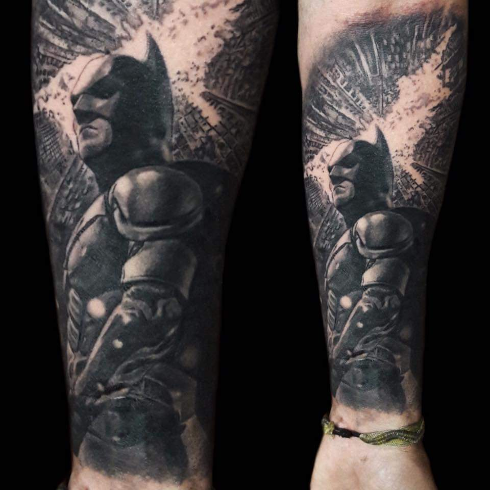
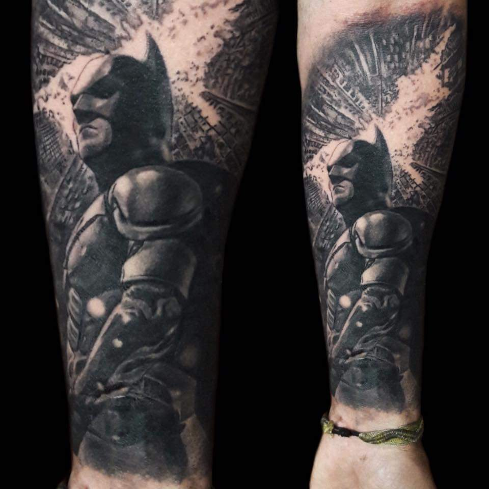

Trabajos
 

Aclaraciones generales:
Mi labor como profesional es siempre llevar el proyecto a buen puerto y cualquier decisión tomada es en pos de lograr un buen trabajo.
Mi especialización es el estilo Black and Gray (realismo en grises) no hago full color, ni tradi, ni oriental ni utilizo elementos de dichos estilos
No utilizo colores, a menos que la pieza lo requiera o le de un poco mas de impacto.
Esta demás decir que no copio ni tatuó diseños sacados de internet ni diseños traídos por el cliente, mas si tal vez guiarme por diseños, dibujos o fotos que se traigan.
Actualmente trato de concentrarme en piezas a gran escala y doy prioridad a las mismas.
Ante todo se debe comprender que el tatuaje a gran escala es un trabajo que lleva tiempo y esfuerzo, no se debe apurar y debe tomarse como es, un proyecto de vida. Jamas te volverás a ver al espejo de la misma manera.
Sobre el diseño:
Como profesional priorizo el diseño, la estética cuidada y el impacto visual de la imagen en el tatuaje, esto quiere decir que voy a poner por encima de todo que el tatuaje se luzca y funcione bien en el cuerpo.
Mi manera es siempre trabajar sobre la idea, el simbolismo y/o los elementos que se deben priorizar en la pieza. La composición, tamaños, dirección, balance, sombras, valores, luminosidad, oscuridad, textura y cualquier otro elemento secundario que compongan la imagen quedara enteramente a mi criterio como artista y profesional.
En resumidas palabras, todo el diseño debe quedar enteramente en mis manos, interpretar la idea del cliente lo mejor posible es mi trabajo
Cualquier cambio de diseño podrá ser consultado y tenido en cuenta, pero si dicho cambio afectara o comprometiera la armonía, calidad y/o impacto visual del tatuaje, estaré en mi derecho de no llevar a cabo el proyecto o (ya avanzado el mismo) hacer caso omiso al mismo.
Como se arma el diseño:
Al especializarme completamente en el realismo suelo basarme en fotos/imágenes realistas y detalladas. Las imágenes pueden ser sacadas de internet, libros, comics, etc. También suelo utilizar mis propias referencias sacando yo mismo las fotos si el diseño lo requiera.
Todo el diseño es montado digitalmente y en ocasiones intervenido de manera tradicional a lápiz.
Las mangas, medias mangas, espaldas, pechos o piernas siempre serán planteadas enteramente de manera digital y en todos los casos se requerirá sacar una medida del/los lugar/es tatuar.
El espectro de contraste, valores,texturas y detalles siempre estará sujeto a los tamaños de la pieza pero mas que nada a la tes de piel del cliente, siendo la piel blanca en la que mas se pueden trabajar los detalles y las pieles mas oscuras donde menos se pueden trabajar los susodichos (y donde se debe priorizar el contraste de las piezas para lograr el mayor impacto visual posible)
Los diseños solo se verán el mismo día de la sesión, nunca antes, y cualquier cambio que se deba hacer, sera hecho el mismo día de la sesión
De ser un retrato se deberá traer la foto a tatuar y los tamaños y lugares donde irán estarán muy ligados a la foto misma. (las zonas mas planas siempre serán las mejores para retratar un rostro)